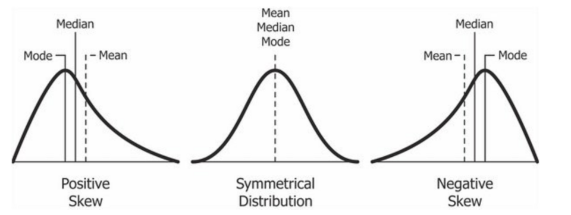

The Big Picture: Making Sense of the Numbers
Imagine a psychologist surveys 1,000 students about their anxiety levels before a major exam. Staring at a spreadsheet containing 1,000 raw numbers is useless; the human brain cannot process that much chaotic information. To make the data meaningful, psychologists use math. Specifically, they use statistics to organize, summarize, and ultimately make predictions about human behavior based on the numbers they collect.
1.Organizing the Data: Descriptive Statistics
Once data is collected, the first step is to use Descriptive Statistics: statistical methods used to organize, summarize, and describe data in a meaningful way. This gives us a "snapshot" of what the sample looks like.
Where is the Middle? (Measures of Central Tendency)
To summarize a massive dataset, we try to find a single number that represents the center or typical score. This is called a Measure of Central Tendency. There are three primary ways to calculate this:
- Mean
- The arithmetic average of a distribution, obtained by adding the scores and then dividing by the number of scores.
- Median
- The exact middle score in a distribution; half the scores are above it and half are below it.
- Mode
- The most frequently occurring score(s) in a distribution. If a test is so polarizing that most students either get an A or an F with very few in the middle, it creates a Bimodal Distribution (a distribution that has two distinct peaks or modes).
We often like to see where a specific individual falls relative to everyone else using a Percentile Rank, which is the percentage of scores that fall below a specific score in a distribution. Example: If your SAT score is in the 90th percentile, it doesn't mean you got a 90% on the test; it means you scored higher than 90% of the people who took the test.
The Problem with Skewed Data
Most natural data falls into a symmetrical, bell-shaped Normal Curve, where the mean, median, and mode are all identical and sit right in the middle. This curve follows a predictable pattern: about 68% of scores fall within one standard deviation of the mean, about 95% fall within two standard deviations, and about 99.7% fall within three standard deviations. Because of this pattern, scores become increasingly rare the further they stray from the mean. But what happens if an extreme outlier gets into the data? The mean gets dragged toward the outlier, creating a "skew."
- Positive Skew
- Imagine 10 broke college students in a coffee shop. Their median income is $10,000. Suddenly, billionaire Elon Musk walks in. Because his income is so unusually high, the mean income of the room skyrockets to $100 million! The few unusually high scores create a long tail to the right (the positive end of a number line). In a positive skew, the mean is always higher than the median.
- Negative Skew
- Imagine a very easy AP Psychology test where everyone gets an A, but one student sleeps through it and gets a zero. That unusually low score pulls the class average down, creating a long tail to the left (the negative end). In a negative skew, the mean is lower than the median.

How Spread Out is the Data? (Measures of Variation)
Central tendency only tells half the story. To truly understand a dataset, we need Measures of Variation, which describe how much data values differ or spread out.
Imagine two students, Alex and Taylor, who both have an 85% average (mean). Alex scored an 84, 85, and 86 on their tests. Taylor scored a 70, 85, and 100. Their averages are identical, but their performance is radically different! To capture this, we use two tools:
- Range
- The difference between the highest and lowest scores. (Alex's range is 2; Taylor's is 30). The range is helpful, but it is easily distorted by a single extreme outlier.
- Standard Deviation
- A measure of how spread out data are from the mean (average). A low standard deviation means most scores are packed tightly close to the mean (like Alex). A high standard deviation means the scores are wildly spread out (like Taylor). Standard deviation is highly useful because it uses every single score in the dataset to calculate the spread, not just the extremes.
2.Making the Leap: Inferential Statistics
Once a researcher has summarized their sample data, they want to answer the big question: "Can I generalize these findings to the entire population?" To do this, they shift from descriptive statistics to Inferential Statistics: mathematical methods used to make conclusions or predictions about a larger population based on data from a sample.
We can confidently generalize from a sample to a population only when three conditions are met:
- The sample is representative, not biased.
- The sample has low variability (a low standard deviation). Consistent scores are more reliable than wildly fluctuating scores.
- The sample size is large. (Flipping a coin 100 times tells you more about probability than flipping it 3 times).
Significance vs. Size
When an experiment shows a difference between the control group and the experimental group, researchers must run a math test to ensure the difference didn't just happen by random luck. If the math proves the difference is reliable, it is said to have Statistical Significance (a statistical statement of how likely it is that an obtained result occurred by chance). In psychology, a result is usually considered statistically significant if the p-value is less than 0.05 (meaning there is less than a 5% probability the results were a fluke).
However, just because a result is mathematically "real" doesn't mean it is life-changing. To measure the practical importance, researchers look at Effect Size: a measure of how strong or meaningful a relationship or difference is. Effect sizes are typically classified as small (around 0.2 or below), medium (roughly 0.3 to 0.7), or large (0.8 or greater). Example: Imagine a new study drug that is proven to raise your AP test score by exactly 0.01 points. Because it was tested on a million people, the result is statistically significant (it definitely works and wasn't a fluke). But the effect size is so incredibly small that the drug is practically useless in the real world!
3.AP Science Practice Focus: Data Interpretation
According to the College Board's framework, Practice 3 focuses entirely on your ability to evaluate representations of psychological concepts in numbers, graphs, and charts.
- Practice 3.B
- You must be able to interpret descriptive statistics, specifically pointing out which measure of central tendency (mean, median, or mode) is the best choice to represent a specific dataset, and understanding what the standard deviation tells you about the spread.
- Practice 3.C
- You must be able to evaluate the results of a study and explain what the effect size and statistical significance actually mean in plain English.
📝 The AAQ Exam Connection
Statistics are guaranteed to show up in the Article Analysis Question (AAQ) FRQ. Here is exactly how these mathematical concepts will be tested:
- Part CInterpret Statistics
- You will be given a specific number from the text (like a mean score, a standard deviation, or a correlation coefficient) and asked to explain what that number means in the context of the study.
Example: "The experimental group had a standard deviation of 2.1, while the control group had a standard deviation of 15.4." You would need to write that the experimental group's scores were tightly clustered together, while the control group's scores were widely spread apart!
4.Don't Trip Up! (Common Misconceptions)
⚠️ Mean vs. Median in Skewed Data: The AP Exam loves to test this! If a dataset has an extreme outlier (creating a skew), the Mean becomes essentially useless because it gets dragged artificially high or low. In a skewed distribution, the Median is always the most accurate representation of the "typical" score.
⚠️ Descriptive vs. Inferential: Remember the timeline! You use Descriptive statistics first to summarize the data you currently have in front of you. You use Inferential statistics second to mathematically guess what the rest of the world looks like.
5.Key Terms in This Topic
6.Level Up Your Score: Interactive Review
Ensure these mathematical concepts are locked in by practicing with our review tools:
Review the "Unit 0" deck to master the differences between Positive Skew, Negative Skew, and Normal Curves.
See if you can successfully group the Measures of Central Tendency apart from the Measures of Variation!
Verify your understanding of standard deviation and statistical significance with our adaptive quiz.